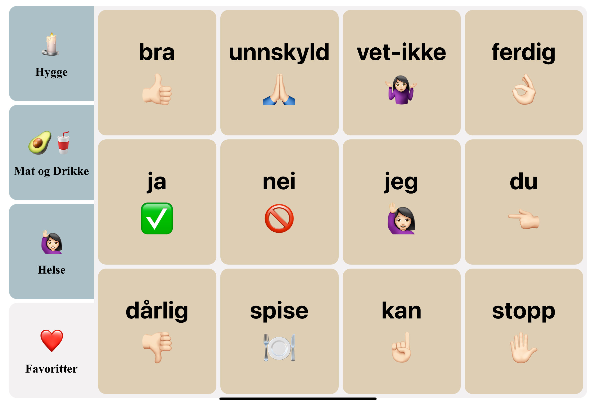

J-Speech Assistant is a Progressive Web App (PWA) designed to assist individuals with speech difficulties. This soundboard-based app allows users to tap buttons that play pre-recorded sounds or phrases, streamlining communication for those who need it most.

Process
This project focused on accessibility and usability. The core goal was to build an interface optimized for tablets that users could easily navigate. The app was designed to work offline, leveraging PWA features to ensure consistent functionality even without an internet connection.
From concept to implementation, the process involved researching similar assistive tools and prototyping in Figma. Once the design was finalized, I moved into development, using vanilla HTML, CSS, and JavaScript to bring the app to life.
Code
J-Speech uses simple, maintainable code with a focus on reusability and performance. The soundboard is dynamically rendered, making it easy to expand or modify phrases and sounds.
I also incorporated features like:
- - Offline support through PWA functionality.
- - Responsive design, ensuring the app looks great on tablets and mobile devices.
- - Event listeners for interactive soundboard buttons.
Design
The design is clean and functional, with large buttons and a straightforward layout to minimize friction for users. Inspired by assistive communication devices, the app emphasizes clarity and ease of use.
Colors and typography were chosen to enhance readability while maintaining a professional aesthetic. Each button is visually distinct, ensuring users can quickly identify and select the desired option.
Links
Published website: https://j-speech.netlify.app
GitHub repository: https://github.com/sbraende/j-speech-assistant